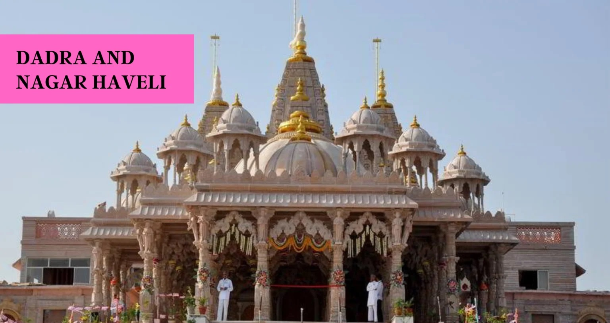

DADRA AND NAGAR HAVELI

Speciality of Dadra and Nagar Haveli
immense natural beauty

The Union Territory of Dadra and Nagar Haveli lies near the western coast of India and consists of two separate parts. Of these, Dadra is surrounded by the state of Gujarat, and Nagar Haveli lies on the border of Maharashtra and Gujarat. The territory has hilly terrain especially towards the north-east and east where it is surrounded by ranges of Sahyadri Mountains (Western Hills). River Daman Ganga and its three tributaries cut across this territory. The most prominent tribes are Dhodia, Kokna and Varli, with small groups of Koli, Kathodi, Naika and Dubla scattered across the territory.
Tourism

1.Dundhni Lake
2.Om Temple
3.Swaminarayan Temple
4.Silvassa Vasona Lion Safari
5.Butterfly Park
6.Athal Bridge
Warli Paintings

Warli painting is a style of tribal art mostly created by the tribal people from the North Sahyadri Range in India. This range encompasses cities such as Dahanu, Talasari, Jawhar,Palghar, Mokhada, and Vikramgad of Palghar district. This tribal art was originated in Maharashtra and also practised today at nearby places like Silvassa (UT of DD & DNH) also. The simple pictorial language of Warli painting is matched by a rudimentary technique.